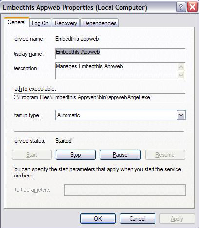
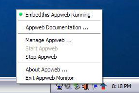

Running Appweb as a System Service or Daemon
After installation, Appweb is started automatically as a system service or daemon. You can change this behavior and only start Appweb manually if you wish.
This page gives generic and windows-specific information about starting and stopping the Appweb service.
Generic Instructions
Appweb includes a manager program called appman. This program is used to configure the running of Appweb as service. Appman provides a generic way to install/uninstall, enable/disable, start/stop, and run the Appweb service regardless of the Operating System.
The Appman command takes the form:
appman commands...
Where commands can be:
| Command | Details |
|---|---|
| install | Install Appweb service |
| uninstall | Uninstall Appweb service |
| enable | Enable Appweb to start automatically on system boot |
| disable | Disable Appweb from automatically starting |
| start | Start Appweb manually |
| stop | Stop Appweb |
| run | Run Appweb and monitor its execution. Restart if it fails. |
Stopping Appweb as a Service
Use the following command to stop Appweb running as a service permanently:
appman disable
Run the following commands to restore Appweb running as a service:
appman enable appman start
Windows Instructions
On Windows, Appweb is managed by two programs:
The Appman manager program is installed as a windows service that starts, manages and restarts Appweb. If Appweb fails, Appman will automatically restart it.
Windows services run in the background with little interaction with the user. So to provide more convenient access to manage Appweb, the Appweb Monitor program runs and is accessible from the windows system tray (taskbar notification area). You can start and stop Appweb using either the manager or Monitor programs.
Appman — Appweb Manager Service
You can interface with the Appman program via the Windows Services Applet. To invoke the applet select:
Start -> Control Panel -> Administrative Tools -> Services
Then select and double click on the Embedthis Appweb service. A dialog panel will be displayed from which you can start and stop the manager (appman) process.
When started or stopped, the manager will first do the same operation on the real Appweb instance. Pausing the manager will have no effect on Appweb, but will pause the manager itself.
Once installed, you will need to start the service via the Services control applet.
Appweb Monitor
The Windows Appweb Monitor is launched when you log in. It a quick and easy way to start, stop, and restart Appweb. You can also launch a browser to display the documentation or the Appweb management console (future feature).
When you select 'stop' Appweb, you actually stop the manager process which in turn stops Appweb. Similarly, when you select 'start' Appweb, you are really starting the manager which detects that Appweb is not running and automatically launches it.